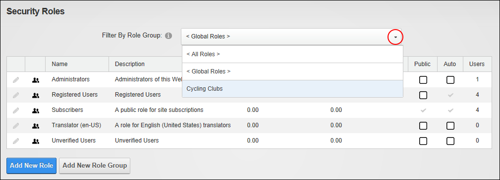

Filtering Security Roles by Role Group
How to filter the security roles displayed in the Security Roles module. You can choose to view all roles, global roles or roles belonging to a role group . Note: One or more role groups must already exist to enable the filter drop down list.
- Navigate to Admin >
 Security Roles - OR - Go to a Security Roles module.
Security Roles - OR - Go to a Security Roles module.
- At Filter By Role Group, select one of the following options from the drop down list:
- < All Roles >: Displays all roles including both roles within and not within a role group.
- < Global Roles >: Displays all roles that do not belong to a role group. The default global roles are Administrators, Registered Users, Subscribers and Translator (en-US)
- [Role Group Name]: Select the name of a role group to view each of the roles within that Role Group. For example, the below image displays a Staff role group.

Filtering by Role Group